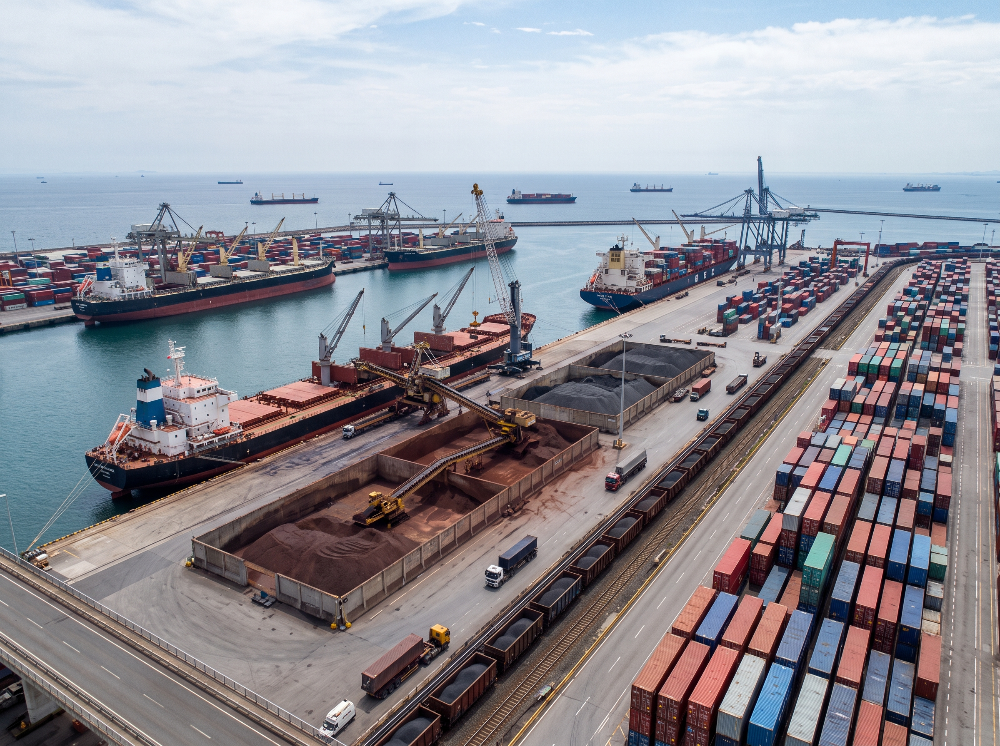

Titta dig omkring i klassrummet. Bänken du sitter vid, fönstret, mobilen som du lämnat in, vattnet i kranen och maten i matsalen – allt kommer från början från naturen. Saker som människor tar från naturen och har nytta av kallas naturresurser. Den här texten handlar om fyra viktiga naturresurser: vatten, odlingsmark, skog och mineraler.
Du kommer att få läsa om var på jorden de olika resurserna finns, varför de finns just där, och vad som händer med landskapet och med människorna när vi använder dem. Det är viktig kunskap, eftersom naturresurserna är mycket ojämnt fördelade över jorden. Var du råkar bo påverkar vad du kan odla, om du har rent vatten, och vad du kan tjäna pengar på. Många av världens konflikter i dag handlar just om vem som ska få använda en naturresurs.
Det här ska du lära dig
- Vad en naturresurs är, och vilka fyra vi arbetar med: vatten, odlingsmark, skog och mineraler.
- Var på jorden resurserna finns – och varför de finns just där.
- Vad som händer med landskapet och med människorna när vi använder resurserna.
- Var platserna vi tar upp ligger på kartan.
Så här arbetar du
- 1 Läs veckans avsnitt i texten själv innan du börjar med uppgifterna.
- 2 Skriv alla svar i häftet, i hela meningar. Skriv så att någon som inte läst texten förstår.
- 3 Gör uppgifterna i ordningen A, B och sedan C.
- 4 Använd orden från begreppslistan när du skriver.
- 5 Fastnar du: läs frågan igen, leta i texten, räck sedan upp handen.
- 6 Blir du klar: öva på platserna eller utveckla B/C-svar.
Vad som händer sedan
Sista passet vecka 43 gör vi en kort diagnos på naturresurserna. Den sätter inget betyg – den visar dig och mig vad som sitter och vad vi behöver repetera. Efter höstlovet arbetar vi vidare med jordens klimat, och arbetsområdet avslutas med ett prov på sista SO-passet vecka 47.
Vad är en naturresurs?
En naturresurs är något som finns i naturen och som människor använder. Träden i skogen är en naturresurs. Vattnet i sjön är en naturresurs. Metallen i berget är en naturresurs. Också jorden som vi odlar i, solens värme och vinden räknas dit.
När vi tar en naturresurs ur naturen för att tillverka något av den kallas den för en råvara. Ett träd är råvaran till en träbänk. Järnmalm ur ett berg är råvaran till stålet i en cykel. Nästan allt du använder under en dag har börjat som en råvara någonstans i naturen, ofta långt därifrån du bor.
Förnybara och icke-förnybara
Naturresurser delas in i två grupper. En förnybar resurs kan bildas på nytt. Ett träd som huggs ned kan ersättas av ett nytt träd, och regnet fyller på sjöar och floder. En icke-förnybar resurs bildas så långsamt att den i praktiken tar slut när vi använt den. Metaller, olja och kol har tagit miljoner år att bildas. Det som bränns upp i dag kommer inte tillbaka.
Men förnybart betyder inte obegränsat. En skog växer bara tillbaka om man inte hugger ned mer än vad som hinner växa upp. Grundvattennivån kan sjunka om man pumpar upp mer vatten än vad som hinner bildas genom nederbörd. Skillnaden mellan de två grupperna handlar alltså om tid – hur snabbt naturen hinner skapa nytt.
Fyra naturresurser i ett och samma landskap: vattnet i floden, odlingsmarken, skogen och metallen i berget.
DEL 2 Vatten och odlingsmark
.jpeg)
Vatten
Det mesta av jordens vatten finns i haven, och havsvatten är salt. Bara ungefär tre procent av allt vatten på jorden är sötvatten, alltså vatten utan havssalt, som efter rening kan användas till dricksvatten och odling. Större delen av det sötvattnet är dessutom fruset i glaciärer och i isen på Grönland och i Arktis. Det som blir kvar till människor är alltså en liten del av jordens vatten.
Sötvattnet är också ojämnt fördelat. I Sverige regnar det över hela landet och vi har tusentals sjöar. I Sahara i norra Afrika kan det gå år mellan regnen. Därför blir floderna livsviktiga just där. Egypten är ett bra exempel: nästan hela landet är öken, och nästan alla egyptier bor i ett smalt bälte längs floden Nilen. Vattnet bestämmer var människorna bor.
När vattnet inte räcker får det stora följder. Odlingarna ger mindre mat. Smutsigt vatten sprider sjukdomar. I många länder är det barn, oftast flickor, som går flera kilometer varje dag för att hämta vatten. Det är tid som de annars hade kunnat gå i skolan. Bristen på vatten handlar alltså inte bara om törst, utan också om hälsa och utbildning.
Att använda vatten förändrar också landskapet. När floder däms upp för att ge vatten till åkrar eller för att producera el bildas stora konstgjorda sjöar, samtidigt som marken nedanför dammen får mindre vatten än förut. På vissa platser har så mycket vatten letts bort till bevattning av odlingar att floder och sjöar har krympt kraftigt, och landskapet runt omkring har blivit torrare.
.jpeg)
Odlingsmark
För att kunna odla behövs tre saker: bra jord, lagom mycket nederbörd och en tillräckligt lång växtsäsong. Växtsäsong är den del av året då det är varmt nog för att växter ska växa. Saknas någon av de tre sakerna blir det svårt att få skörd.
Därför ser jordbruket olika ut på olika platser. I södra Sverige finns bra jord och en växtsäsong på flera månader, och där odlas vete, potatis och raps. I norra Sverige är somrarna för korta och svåra för spannmål, och där är det vanligare med djurhållning och skogsbruk. I södra och östra Asien faller stora mängder regn under en del av året, och där odlas ris. En gröda som behöver mycket vatten.
Gemensamt för alla platser är att det är naturens förutsättningar som sätter gränserna. Vad människor odlar följer jorden, nederbörden och växtsäsongen. Det är bara gränserna som ligger på olika ställen. Därför liknar jordbruket i norra och södra Sverige varandra på en punkt, även om det som odlas är olika: på båda platserna bestäms valet av gröda av klimatet.
Odlingsmark är också en resurs som kan förstöras. Om man odlar samma sak år efter år utan att ge tillbaka näring blir jorden mager. Om skyddande växter tas bort kan vind och regn föra bort det översta jordlagret, det som allt växer i. Det kallas jorderosion, och det är ett av de största problemen för jordbruket i världen.
DEL 3 Skog och mineraler
.jpeg)
Skogen
Ungefär sjuttio procent av Sveriges landareal (landyta) är skog. Sverige ligger till stor del i det nordliga barrskogsbältet (Taigan), som sträcker sig genom Norge, Finland, Ryssland och Kanada, men här finns också lövskog och fjällbjörkskog. Gran och tall trivs där det är kallt och där växtsäsongen är kort. Närmare ekvatorn, där det är varmt och regnar mycket, växer i stället regnskog. De största regnskogarna finns i Amazonas i Brasilien och i Kongo i centrala Afrika.
Skogen används till virke att bygga hus av, till papper och kartong, och till bränsle. För Sverige är skogen en av de allra viktigaste resurserna, och trävaror är en stor exportvara. Men skogen är också ett hem för djur och växter, en plats där människor rör sig, och den tar upp koldioxid ur luften.
I Amazonas huggs stora områden ned varje år, framför allt för att göra plats åt betesmark för kor och åt odlingar. Det kallas avskogning. Följderna blir flera på en gång: djur och växter förlorar sina livsmiljöer, jorden spolas bort när trädens rötter inte längre håller kvar den, och mindre koldioxid tas upp ur luften. På många platser blir marken snabbt mindre bördig efter några år, särskilt om odlingen inte sköts på ett hållbart sätt.
.jpeg)
Mineraler och metaller
Mineraler finns i berggrunden, men inte var som helst. De har bildats under mycket lång tid och sitter samlade på vissa platser. Därför har vissa länder gott om en metall som andra länder saknar helt.
I Kiruna i norra Sverige finns en av världens största järnmalmsgruvor. Järnmalmen blir stål, som används till bilar, broar och byggnader. I Demokratiska republiken Kongo bryts mer än hälften av all kobolt i världen. Kobolt är en metall som behövs i batterier. Till exempel i mobiler, datorer och elbilar. Din mobiltelefon, som du lämnat in till din handledare, innehåller metaller från flera olika världsdelar.
Gruvdrift förändrar landskapet mer än någon annan resursåtervinning. Berg sprängs bort, stora hål och högar av överbliven sten bildas, och vatten i området kan förorenas. I Kiruna har gruvan gått så djupt in under staden att marken riskerar att spricka. Därför flyttas hela stadens centrum till en ny plats några kilometer bort – hus, kyrka och invånare. Det är ett tydligt exempel på hur användningen av en naturresurs kan förändra både landskapet och människors vardag.
Vem vinner och vem förlorar?
När en naturresurs används påverkas alltid flera parter, och de påverkas inte på samma sätt. Därför räcker det sällan att fråga om något är bra eller dåligt. Man behöver fråga: bra för vem?
Tänk på gruvan i Kiruna. Företaget som äger gruvan tjänar pengar. Många i staden får jobb, och Sverige får skatteinkomster och en viktig exportvara. Samtidigt måste människor lämna sina hem när staden flyttas, renskötande samer i området kan få sina betesmarker uppdelade av gruvan och järnvägen, och naturen i området förändras för alltid. Samma händelse ser alltså helt olika ut beroende på vem man frågar.
Samma mönster finns i Kongo. Koboltbrytningen ger arbete och inkomster till landet. En del av koboltet bryts i stora industrigruvor, en del i småskaliga gruvor där människor gräver med enkla verktyg. En del av den småskaliga gruvbrytningen är farlig och kan innebära mycket låga löner och bristande säkerhet, och en stor del av pengarna hamnar hos företag i andra länder. Vi som köper mobiler i Sverige får nytta av metallen, men det är människor i Kongo som lever med gruvans negativa följder.
En sak är värd att lägga märke till: den som använder resursen och den som drabbas av hur den tas fram bor ofta i olika delar av världen. Det gör det lätt att glömma bort följderna. Ju längre bort en följd sker, desto svårare är den att se.

Sammanfattande avslutning
Naturresurser är det jorden ger oss: vatten, odlingsmark, skog och mineraler. De finns där de finns på grund av klimatet och berggrunden, och de är mycket ojämnt fördelade över jorden. Därför ser människors liv olika ut på olika platser – vad de odlar, vad de arbetar med och hur lätt de har att få rent vatten. När vi använder en resurs förändras landskapet, och några tjänar på det medan andra får betala priset. Att kunna se både var resurserna finns, varför de finns där och vem som påverkas av dem – det är kunskap du kommer att ha nytta av under hela geografikursen.
Sammanfattning
- En naturresurs är något som finns i naturen och som människor använder. När den används för att tillverka något kallas den råvara.
- Förnybara resurser som skog och vatten kan bildas på nytt. Icke-förnybara resurser som metaller och olja tar slut. Förnybart betyder inte obegränsat.
- Bara en liten del av jordens vatten är sötvatten, och det är ojämnt fördelat. Därför bor nästan alla egyptier nära Nilen.
- För att kunna odla behövs bra jord, lagom nederbörd och en tillräckligt lång växtsäsong. Därför odlas olika saker på olika platser.
- Sverige ligger till stor del i det nordliga barrskogsbältet tillsammans med Finland, Ryssland och Kanada, men har också lövskog och fjällbjörkskog. Regnskogarna finns nära ekvatorn, i Amazonas och i Kongo.
- Gruvdrift och avskogning förändrar landskapet kraftigt – Kiruna flyttar hela sitt centrum på grund av gruvan.
- När en resurs används vinner några och förlorar andra. Fråga alltid: bra för vem?
Platser du ska kunna
Kryssa i platserna när du kan var de ligger på en karta. Använd Google Maps (eller i din kartbok) för att ta reda på var de ligger. Dessa platser nämns i texten.
Begreppslista
Klicka på korten för att se förklaringen.
Uppgifter
Svara i ditt skrivhäfte. Skriv i hela meningar!
- Vad menas med en naturresurs? Skriv en egen förklaring och ge två exempel.
- Vilka fyra naturresurser handlar den här texten om?
- Vad är skillnaden mellan en förnybar och en icke-förnybar naturresurs? Ge ett exempel på varje.
- Ungefär hur stor del av jordens vatten är sötvatten, och var finns större delen av det?
- Vilka tre saker behövs för att man ska kunna odla?
- Ungefär hur stor del av Sveriges landareal är skog, och vilka typer av skog finns här?
- Var i världen finns barrskogarna, och var finns regnskogarna?
- Vad bryts i gruvan i Kiruna, och vad används det till?
- Vad är kobolt, och i vilket land bryts mer än hälften av världens kobolt?
- Varför bor nästan alla människor i Egypten nära floden Nilen? Förklara i flera led.
- Bygg en orsakskedja i tre led: Skogen i Amazonas huggs ned → … → … . Skriv en mening per led.
- Jämför jordbruket i södra Sverige och i norra Sverige. Skriv en likhet, en skillnad och en förklaring till skillnaden.
*Tips: likheten handlar om vad som styr valet av gröda, inte om vilka grödor det är.* - Varför har vissa länder gott om metaller medan andra saknar dem helt? Förklara med egna ord.
- Välj två av de fyra naturresurserna. Förklara vad som händer med landskapet när människor använder dem.
Skriv ett sammanhängande svar på 6–10 meningar på frågan nedan. Använd stödfrågorna som hjälp, men skriv i löpande text – inte som en lista.
Vilka vinner och vilka förlorar när en naturresurs används? Välj gruvan i Kiruna eller koboltbrytningen i Kongo som exempel.
- Vilka olika grupper påverkas av det du valt? Tänk på företaget, de som bor där och naturen.
- Vad vinner varje grupp, och vad förlorar den?
- Varför blir följderna olika för olika grupper?
- Vem tycker du påverkas mest, och varför? Motivera ditt svar.